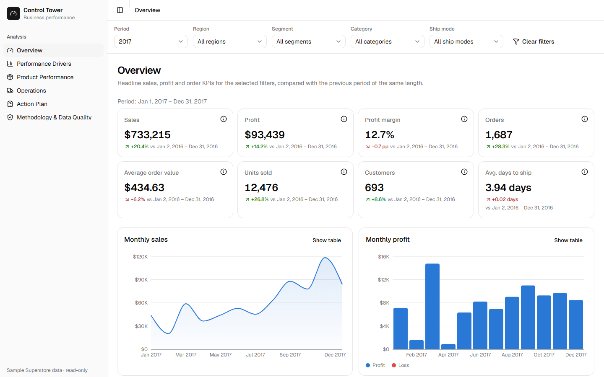
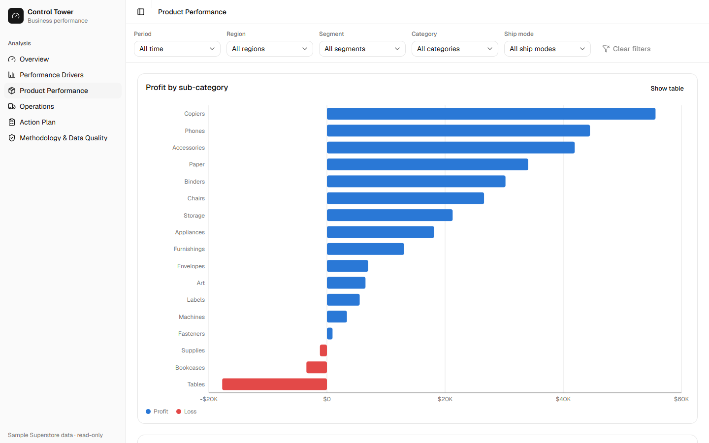
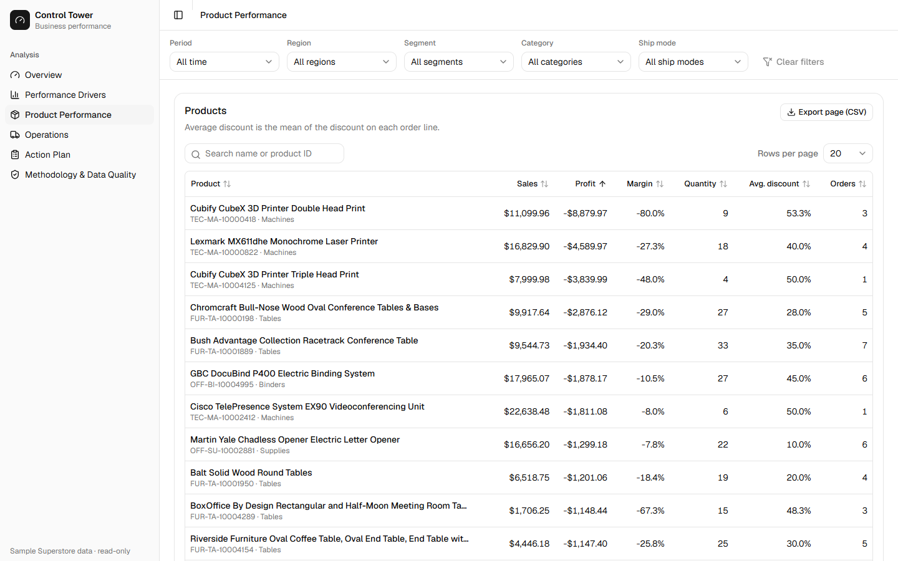
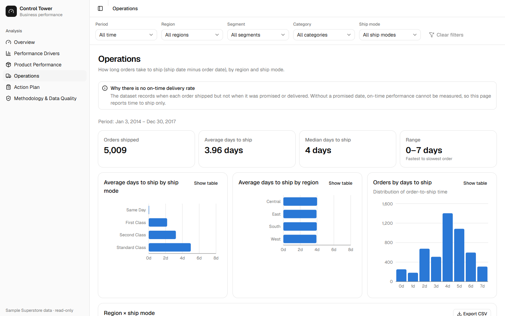
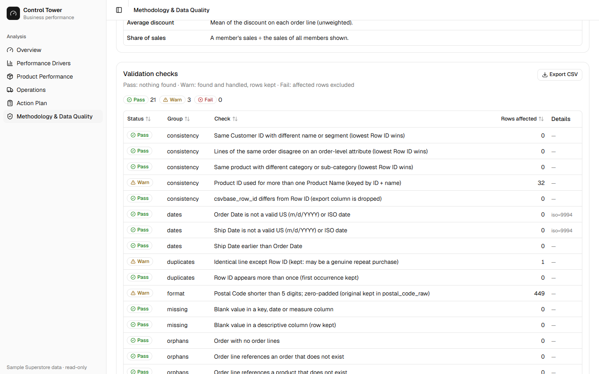

A retailer needs one place to see how sales, profit and operations are doing, where the money is lost, and what to act on. I built it end to end, from raw CSV to a live web app, with every number traceable to validated data.


The problem
The data is the public Sample Superstore dataset: 9,994 order lines, 5,009 orders and 793 customers from 2014 to 2017. A dashboard is only useful if people trust it, so the numbers had to be validated, consistent under any filter, and the insights reproducible and honest about what the data can and cannot show. It also had to run for free.
Approach
- Data preparation and quality. Python and pandas read the file as text, parse dates strictly and run 24 checks (duplicates, missing values, invalid dates, discount ranges, orphaned keys, inconsistent attributes). They found 449 postal codes that had lost a leading zero, 32 Product IDs reused for different products and one duplicated line. Customer names are dropped.
- Relational model. The data is split into orders (one row per order), order lines (one row per line), products and customers, so orders are counted once and sales are summed at line level.
- KPIs. DuckDB pre-computes every KPI for every filter combination. Each table is reconciled against totals computed independently with pandas. Distinct counts such as orders and customers are never summed across categories, because one order can contain several.
- Deterministic insights. Fixed rules flag losing sub-categories, high-sales products that lose money, regional margins and the discount–margin pattern. Every insight carries its evidence and a caveat, and a test rejects causal wording.
- API. A read-only TypeScript API on Cloudflare Workers queries a D1 (SQLite) database. Filters are checked against allowlists and bound as SQL parameters. Most requests read a few pre-computed rows; custom date ranges and ship-mode filters run indexed SQL, and tests check that both paths return the same numbers.
- Dashboard. React and TypeScript with Tailwind CSS, shadcn/ui, Recharts and TanStack Table: global filters kept in the URL, server-side search and sorting, CSV export, an action plan, and loading, error and empty states. An automated accessibility check (axe) finds no violations.
Results


- Three sub-categories lose money overall: Tables (−$17.7k), Bookcases (−$3.5k) and Supplies (−$1.2k). Tables made a loss in each of the four years.
- 127 products in the top quartile of sales lose money, together −$64.9k on $491k of sales.
- Central has the lowest margin, 7.9% against 12.5% overall: 21.8% of sales but 13.9% of profit. West brings 37.9% of profit from 31.6% of sales.
- Lines discounted above 20% have a combined margin of −37.3%, against 29.5% for undiscounted lines, and the pattern holds in all three categories. This is an association, not a measured effect: a pricing test would be needed to estimate what changing discounts would do.






Limitations
Sample Superstore is a teaching dataset with fictional customers, so the findings illustrate the method rather than a real business. The data has no promised or delivery dates, so delivery performance cannot be measured, and the insights describe patterns over the full period without claiming causes.